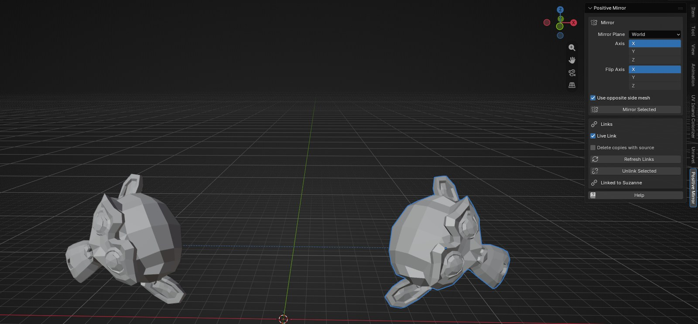
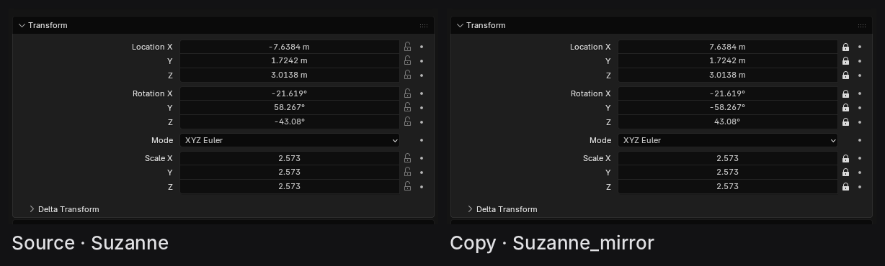
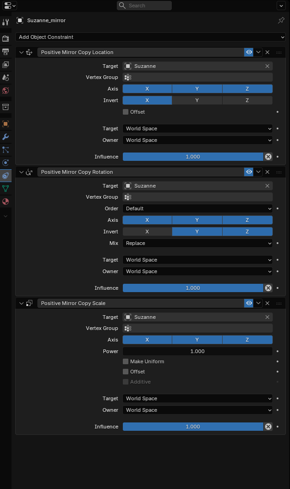
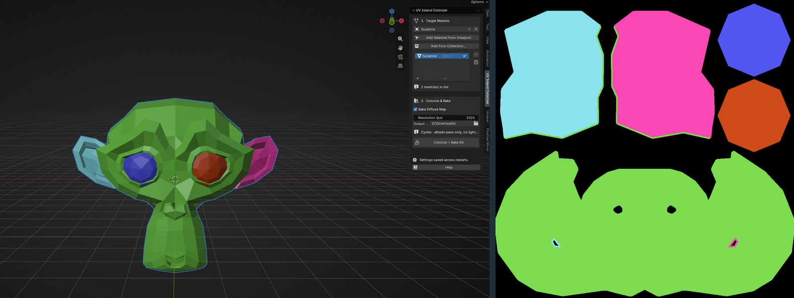

Small production tools I wrote for my own Blender work. Each one takes a fiddly, repetitive job and makes it one click.
Both are free and open source. UV Island Colorizer is published on Blender Extensions, and Positive Mirror is on GitHub.
Positive Mirror
Mirroring an object in Blender usually means a scale of −1 on one axis. That flips the normals and the winding of the mesh, and many exporters and game engines handle it badly. Positive Mirror makes the mirrored copy with a positive scale instead, and keeps it linked to the source, so the copy follows as you move, rotate or animate the original.
The code is on GitHub, and the latest version can be downloaded from its releases page.

- Transforms, not the mesh
- The tool only ever changes the copy's transform. It never flips vertices or normals, and the copy shares the source's mesh, so instancing is kept.
- The maths
- The source's world matrix is reflected across the mirror plane, then flipped back along a Flip Axis in the object's own space. Two reflections make a proper rotation, so the result has a positive scale. The Flip Axis is the axis the mesh is symmetric along, which is X for most assets.

- A live link without a handler
- My first version kept copies in sync with a depsgraph handler. The extensions review flagged that as a risk to stability and performance, so I rebuilt the link with Blender's own constraints. Copy Location inverts the plane axis, Copy Rotation inverts the other two, and Copy Scale keeps the scale. When the Flip Axis differs from the plane axis, a Transformation constraint adds a fixed half turn. Blender evaluates all of it natively, and copies keep following even with the add-on disabled.
For a mirror across X, the copy gets three constraints targeting the source: Copy Location with X inverted, Copy Rotation with Y and Z inverted, and Copy Scale as it is. That's the same result as the quaternion rule for an X mirror, keeping x and w and negating y and z, but worked out by Blender every frame instead of by Python.

- Mirror planes
- Mirror across a world axis, across the 3D Cursor or across any object's local axis. The last two use a small Mirror Plane empty as the constraints' space. In Object mode that empty copies only the object's location and rotation, so a scaled mirror object can't skew the result.
- Left and right meshes
- Names like Asset_L and Asset_R are paired automatically, so the copy can use the mesh of the other side when an asset isn't symmetric.
- Tidying up
- With no handler running, nothing notices a deleted source by itself. The panel shows when copies have lost their source, and Refresh unlinks them, or deletes them if you choose. Refresh also turns copies made with the first version into constraint links.
UV Island Colorizer
Gives every UV island on a mesh its own colour, so you can check a UV layout at a glance, and can bake the result to a colour ID map for texturing. It works on many meshes at once.
It's published on Blender Extensions, and the code is on GitHub.

- Finding islands
- Islands are found on each mesh's active UV map by walking across faces that are connected in UV space, not just in 3D, so a seam always starts a new island.
- Colours
- Every island gets a distinct colour, stored in a colour attribute called UV Island Colors, and the viewport switches to show it.
- Baking
- The bake uses Cycles and captures only the colour, with no lighting, at 64 to 8192 pixels. Each mesh is saved as its own PNG. Your render engine, materials and selection are put back exactly as they were afterwards.
- Many meshes at once
- Meshes come from a picker, the viewport selection or a whole collection. Meshes without UVs are skipped, and the bake settings are remembered between sessions.
See also
Unravel, my larger Blender tool for torn cloth and frayed threads.